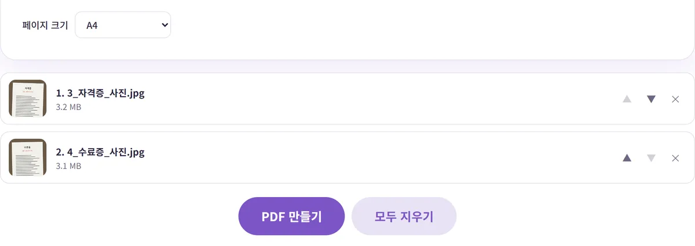
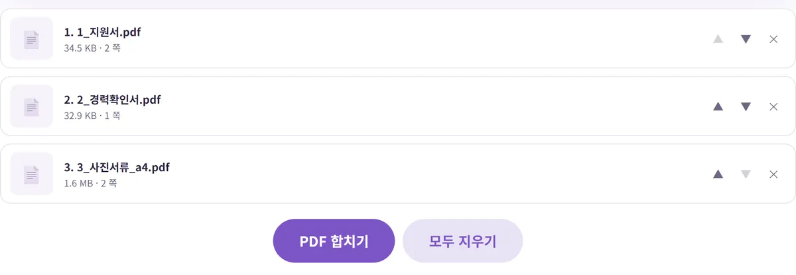

제출 서류 여러 개(PDF+사진)를 PDF 하나로 합치는 순서
'모든 서류를 PDF 파일 하나로 제출하세요'라는 안내를 봤는데, 손에 있는 건 PDF 몇 개와 휴대폰으로 찍은 사진 몇 장이라 막막하셨죠? 이 글에서는 사진을 PDF로 바꾸고, 순서를 정해 하나로 합치고, 파일 이름과 용량까지 맞추는 순서를 실제로 해 본 숫자와 함께 정리했어요.
전체 순서 한눈에 보기
PDF와 사진이 섞여 있을 때는 순서가 중요해요. PDF 합치기 도구는 PDF만 받기 때문에, 사진을 먼저 PDF로 만들어야 하거든요.
- 준비: 제출 안내문에서 서류 순서, 파일 형식, 용량 제한, 파일 이름 규칙을 확인해요.
- 사진 → PDF: 사진으로 찍은 서류를 이미지 PDF 변환으로 PDF로 만들어요.
- 용량 확인: 사진으로 만든 PDF가 크다면 이 단계에서 줄여요.
- 합치기: PDF 합치기에서 순서를 맞춰 하나로 합쳐요.
- 마무리: 파일 이름을 바꾸고, 열어서 쪽 순서와 내용을 확인해요.
이 글에서는 직접 만든 견본 서류로 해 봤어요. 지원서 PDF(2쪽, 35,320바이트), 경력 확인서 PDF(1쪽, 33,669바이트), 그리고 휴대폰 사진 크기(3024×4032)로 만든 자격증·수료증 사진 두 장(각각 약 3.3MB)이에요.
1단계: 사진으로 찍은 서류를 PDF로
- 이미지 PDF 변환을 열고 사진을 한 번에 올리세요.
- ▲▼ 버튼으로 순서를 맞추세요. 올린 순서대로 쪽이 만들어져요.
- '페이지 크기'를 고르세요. 제출 서류라면 'A4'를 추천해요. 이유는 아래에 있어요.
- 'PDF 만들기'를 누르면 '이미지_PDF.pdf'가 내려와요.

두 장을 PDF로 만드는 데 1초 정도 걸렸고, 결과는 1,700,391바이트(약 1.7MB)였어요. 이 도구는 아주 큰 사진을 긴 변 2,500픽셀 이하로 줄여서 넣기 때문에, 6.6MB였던 사진 두 장이 PDF에서는 그보다 작아졌어요.
'사진 크기에 맞춤'과 'A4', 뭐가 다를까요?
'사진 크기에 맞춤'은 사진 픽셀 수를 그대로 종이 크기로 바꿔요. 같은 사진으로 해 보니 쪽 크기가 2268×3024pt, 약 80×107cm짜리 거대한 종이가 됐어요. 화면으로 볼 때는 문제가 없지만, 다른 A4 서류와 합치면 이 쪽만 유난히 크게 보이고 인쇄할 때도 배율이 제각각이 돼요. 'A4'를 고르면 사진이 여백을 두고 A4 한 장 안에 맞춰 들어가서, 합쳤을 때 모든 쪽 크기가 같아져요. 용량은 두 방식이 거의 같았어요.
사진을 찍을 때 배경이 많이 나왔거나 비스듬하다면 이미지 자르기로 서류 부분만 남기고 PDF로 만들면 훨씬 보기 좋아요. 스캔 앱 없이 사진을 서류처럼 만드는 요령은 사진으로 찍은 서류를 PDF로 만드는 법에서 다뤄요.
2단계: 순서 맞춰 하나로 합치기
- PDF 합치기를 열고 합칠 PDF를 모두 올리세요. 파일마다 용량과 쪽수가 표시돼요.
- ▲▼로 제출 안내문의 순서대로 맞추세요. 목록 맨 위가 첫 쪽이 돼요.
- 'PDF 합치기'를 누르면 '합친_PDF.pdf'가 내려와요.

세 파일(총 5쪽)을 합치는 데 1초도 안 걸렸고, 지원서 2쪽, 경력 확인서 1쪽, 사진 서류 2쪽이 순서대로 들어간 5쪽짜리 PDF가 나왔어요. 합치기는 각 PDF의 페이지를 그대로 옮겨 담는 방식이라, 원래 글자를 선택할 수 있던 지원서와 경력 확인서는 합친 뒤에도 글자 선택과 검색이 그대로 됐어요.
서류 순서는 어떻게 정할까요?
안내문에 순서가 있다면 무조건 그 순서를 따르세요. 순서가 따로 없다면 받는 사람이 읽는 흐름대로 '신청서·지원서 → 본문 서류(계획서·경력 확인서 등) → 증빙 서류(자격증·수료증 사본) → 기타' 순으로 두면 무난해요. 서류가 많다면 맨 앞에 제출 서류 목록을 한 쪽 넣어 두는 것도 방법이에요. 목록만 봐도 무엇이 몇 쪽에 있는지 알 수 있어서, 받는 쪽에서 빠진 서류가 없는지 확인하기 쉬워져요.
파일 이름 앞에 '1_', '2_'처럼 번호를 붙여 두면 목록에서 순서를 맞추기 쉬워요. 합칠 파일이 많을수록 이 작은 습관이 실수를 줄여 줘요.
쪽 하나만 빼거나 순서를 쪽 단위로 바꿔야 한다면, 합친 파일을 PDF 페이지 편집에 넣어 정리하면 돼요. 방법은 PDF 페이지 순서 바꾸기·삭제·회전에 있어요.
3단계: 용량이 크다면, 사진 부분만 먼저 줄이기
제출 사이트에 용량 제한이 있다면 PDF 용량 줄이기를 쓰면 돼요. 다만 이 도구는 페이지를 그림으로 바꿔 다시 만들기 때문에, 압축한 PDF에서는 글자를 선택하거나 검색할 수 없어요. 그래서 언제 압축하느냐에 따라 결과가 달라졌어요.
| 방법 | 최종 용량 | 지원서 글자 선택 |
|---|---|---|
| 압축 안 함 | 1,754,436바이트 (약 1.7MB) | 됨 |
| 다 합친 뒤 통째로 압축 (보통) | 186.2KB | 안 됨 |
| 다 합친 뒤 통째로 압축 (강하게) | 107.7KB | 안 됨 |
| 사진 PDF만 먼저 압축(보통) 후 합치기 | 145,637바이트 (약 142KB) | 됨 |
용량을 차지하는 건 대부분 사진 쪽이라, 사진으로 만든 PDF만 먼저 압축하고 합쳤더니 오히려 통째로 압축한 것보다 작으면서 글자도 살아 있었어요. 테스트 사진은 단순한 그림이라 많이 줄었고, 실제 사진은 이보다 덜 줄 수 있어요. 압축 후에는 작은 글씨가 읽히는지 꼭 확대해서 확인하세요. 메일 첨부 용량 문제는 PDF 용량이 커서 메일로 안 보내질 때에서 더 자세히 다뤄요.
4단계: 파일 이름 짓기와 마지막 확인
도구에서 내려받은 파일 이름은 '합친_PDF.pdf'처럼 정해져 있어서, 제출 전에 바꿔 주는 게 좋아요. 안내문에 '성명_지원분야.pdf' 같은 규칙이 있다면 그대로 따르세요. 규칙이 없다면 받는 사람이 한눈에 알아볼 수 있게 '홍길동_지원서류_20261010.pdf'처럼 이름, 서류 종류, 날짜를 넣으면 무난해요.
마이크로소프트의 윈도우 파일 이름 안내에 따르면 파일 이름에는 < > : " / \ | ? * 같은 문자를 쓸 수 없고, 이름 끝을 공백이나 마침표로 끝내지 않는 게 좋아요. 일부 제출 사이트는 한글이나 띄어쓰기가 든 이름에서 오류가 나기도 하니, 업로드가 안 되면 영문·숫자·밑줄(_)로 바꿔 다시 시도해 보세요.
마지막으로 합친 파일을 PDF 뷰어로 열어 아래를 확인하세요.
- 쪽수가 서류별 쪽수의 합과 같은지
- 안내문의 순서대로 들어갔는지, 누운 쪽은 없는지
- 사진 서류의 글씨가 확대했을 때 읽히는지
- 용량과 형식이 제출 조건에 맞는지
암호가 걸린 PDF는 합칠 수 없으니, 그런 파일이 있다면 암호를 풀고 다시 올리세요. 모든 과정은 내 브라우저 안에서 처리되어 서류 파일이 서버로 올라가지 않아요.